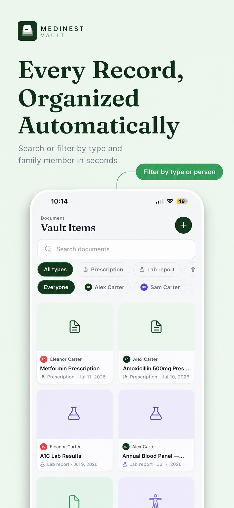

Records & Documents
What to Look for in a Medical Records App
Searching "medical records app" turns up everything from hospital patient portals to generic file storage apps. Neither is built for the actual job most people need: a private place to keep prescriptions, reports, and insurance documents organized and ready to hand over when it matters.

What actually matters in a medical records app
- •Automatic organization. A scan should be filed by type and owner, not dumped in a flat list.
- •Security you control. Your health documents shouldn't leave your device without your say-so.
- •Multiple people, one app. If you're tracking records for more than yourself, the app needs profiles, not just folders.
- •Easy handoff. Exporting a record as a PDF or sharing a link should take one tap, not a search through your camera roll.
Where MediNest fits
MediNest was built as a medical records app for households, not hospitals or single patients. It combines a scanner, per-person profiles, medication tracking, an insurance card wallet, and a shareable emergency card — the pieces most people end up needing anyway, in one vault instead of five separate apps.
Frequently asked questions
What features matter most in a medical records app?
Prioritize document scanning with automatic organization, on-device or encrypted storage, per-person profiles if you're tracking a family, and an easy way to export or share a record with a doctor.
Can I share a record from MediNest with my doctor?
Yes. Any document or emergency card in MediNest can be exported or shared as a PDF, so you can hand it to a doctor or specialist without digging for the original.
A medical records app built for households
Free to start. No credit card required.
Get Notified at Launch